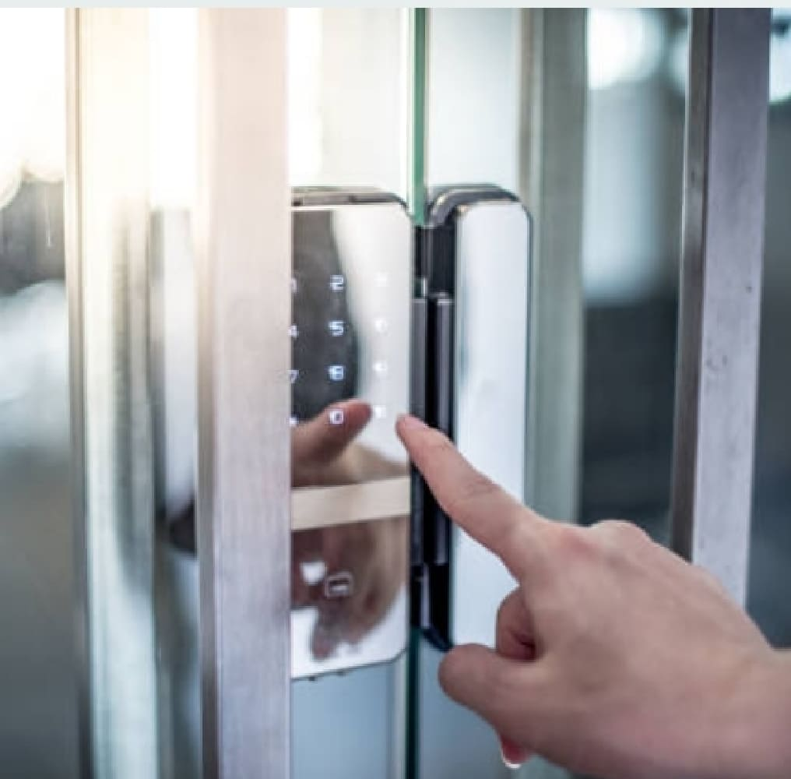

安全的第一道防線，然而長期以來卻也最容易被忽視，讓最重要的讓資產暴露在高風險環境中。台灣依舊有很多工廠的門禁系統老舊，而且一用就是十幾年，大多以卡片做為身分識別、進出門口之用，不過老系統的卡片複製、破解並不難，因此這種做法的安全等級相當低，幾近於不設防，而工廠內的設備、產品、原料是製造業者的企業命脈，在未設防的情況下，幾乎是人人可進，所以我們強烈建議，製造業者應儘速升級門禁系統。(文章引用- Digitimes/老舊門禁系統應盡速升級 避免工廠成為不設防之地) 羿鈞科技的門禁系統規劃和應用,有著多年的經驗與實務建置的案例。像是高科技廠房、公司,豪宅門禁的傳統電子刷卡, RF識別感應到指靜脈感應，以及目前最新的人臉與車牌辨識。也幫助了全台連鎖72家的知名健身房快速整合新舊系統的差勤和全新人臉辨識系統。鍵祥會是您門禁系統最優的整合解決方案的選擇，透過智慧化設計，現代門禁系統將可兼顧安全與效率!
